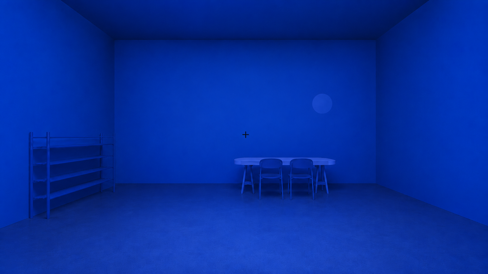

This project keeps the original psychology experiment logic and adds VR-compatible presentation files for WebXR and iPhone Cardboard-style viewing through the Irusu Monster headset.

Best for strict physiological interpretation.
Uses A-Frame/WebXR when supported. Falls back to stereoscopic side-by-side Cardboard mode on iPhone Safari.
Open VR Static ProtocolBest for older adults / dementia participants to reduce boredom and maintain attention.
Uses the same VR/iPhone fallback logic with a gentle same-colour moving cue.
Open VR Subtle Moving Cue ProtocolSeparate subjective ratings can be collected after exposure using post_experiment_questionnaire.html.